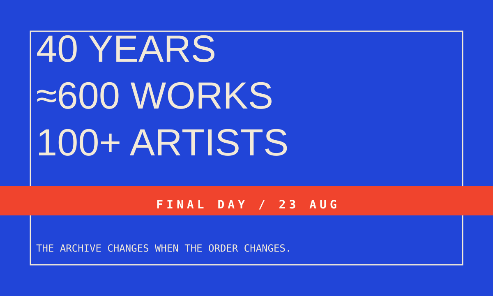
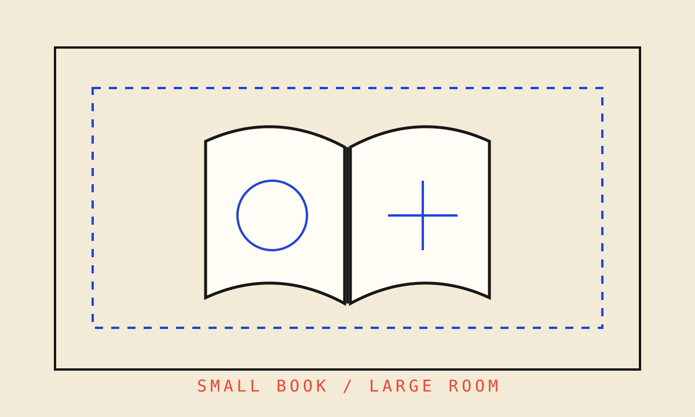

一边收场，一边开盒
THE DAY CLOSES AND OPENS
8 月 23 日，巴黎、佛罗伦萨、洛杉矶、巴尔的摩和东京有几扇门同时合上；Nike 则在同一天打开 Kobe 10 Protro “Halo” 的发售窗口。结束和开始并没有排队发生。它们挤在同一个星期日里，把“今天值得看什么”变成了一次取舍。
On 23 August, several exhibitions reached their final day while a remastered shoe entered its release window. The date is not a manufactured trend. It is a useful cut: what leaves the room, what enters the box, and what remains after both gestures.
本期判断
这里不把“最后一天”包装成稀缺营销。我们只记录能由机构、品牌或明确署名报道重新核验的日期、作品和空间安排。闭展不能证明作品消失，发售也不能证明文化影响已经发生。两者都要在今天之后继续观察。
这期为 2026-08-23 的补建 Preview。资料核验、写作与锁稿实际发生在 2026-08-24（Asia/Shanghai），已经错过 V3 的当日生产窗口，因此不能成为可自动部署的生产刊。
Enter the issue01 / COVER — 四十年，不该被压成一张年表

Fondation Cartier 的《Exposition Générale》在 8 月 23 日结束。官方把这场开馆展定义为四十年项目史的重新激活：近 600 件作品、超过 100 位艺术家，不按年份整齐排队，而是被放进四组主题与一套可移动的建筑装置里。
近 600 件作品和四十年历史，很容易被排成一张证明资历的年表。Fondation Cartier 选择重新安排它们的位置：旧作品、旧展览的碎片、Jean Nouvel 的新建筑和 Formafantasma 的展陈系统，共同组成一张当下仍可进入的地图。
8 月 23 日结束的是这一版排序。四十年的内容还在，下一次能不能换一种读法，才决定这个档案有没有生命。
来源：Fondation Cartier, Exposition Générale · Fondation Cartier 2026 programme PDF
02 / MAJOR — 同一场 Rothko，故意不待在一栋楼里

Palazzo Strozzi 的 Mark Rothko 展览同样在 8 月 23 日结束。超过 70 件作品构成主展，但策展没有把所有观看都锁在宫殿里：Museo di San Marco 的修士小室放入五件作品，Biblioteca Medicea Laurenziana 的前厅再放两件。
这个安排没有把佛罗伦萨当背景板。Rothko 的色域进入修道院小室和 Michelangelo 设计的前厅后，房间的尺度、光线和停留方式都会改变观看。展览因此不只是一份作品清单，也是一条需要走过城市的句子。
我们不能仅凭官网判断三个现场是否同样成功。但它给出一个清楚的编辑原则：当内容与空间真正有关，就不要让便利性把所有东西塞回同一个白盒子。
03 / MAJOR — 有些材料，不负责永恒

Hammer Museum 的《Several Eternities in a Day》在 8 月 23 日结束。22 位来自美洲的艺术家使用牛油果、可可、胭脂树、胭脂虫、石头、黏土与天然染料；馆方明确写出，这些材料会继续滴落、碎裂、蒸发和腐坏。
这让“保存”不再是展览唯一正确的动作。材料带着土地、劳动和 Brown 与 Indigenous worlds 的知识进入美术馆，也带着自己的时间。机构能控制展期，却不能要求每一件作品都在最后一天维持开幕时的样子。
“可持续材料很流行”概括不了这些作品。它们把变化直接放进形式里，观众面对的是一段正在失去水分、颜色和形状的过程。
04 / SIGNAL — 一本小书，也能把人吸进另一个房间

Walters Art Museum 的《Medieval Mindscapes》在 8 月 23 日结束。展览用 20 件手稿与珍本书，观察中世纪《时祷书》如何通过定制肖像、开放场景和页边错视，让持有者把自己想象进图像。
大屏、投影和 VR 出现以前，“沉浸”已经存在于一本可以拿在手里的书里。现实空间和精神世界在页边叠到一起，未说完的部分由观看者补上。
对今天的数字出版，这个提醒很具体：互动不一定等于更多按钮。一个图像、一段留白和一个足够明确的阅读入口，也可以让人主动走完剩下的距离。
05 / SIGNAL — Kobe 10 回来，要动的比外形更多

Nike SNKRS 将 Kobe 10 Protro “Halo” 的发售时间列为 8 月 23 日。Nike 对这次 Protro 的解释很直接：鞋面改成更透气、可弯折的工程网布，中底换成 Cushlon 3.0 与全掌 Zoom Strobel，外底纹路经过计算设计重做；前掌碳纤维翼则被保留。
这次产品判断落在“哪些留下、哪些重做”之间。外形要让旧用户认得，脚下的反馈又不能停在十一年前。
发售页面能证明时间、价格与产品结构，不能替我们证明市场表现。今天先记录一次边界清楚的更新：Protro 不是复印件，怀旧也不该成为停止改进的理由。
来源：Nike SNKRS, Kobe 10 Protro “Halo” · Nike, Remastering the 2015 Design
06 / SIGNAL — 东京把“看展”藏进十多个 QR 入口

渋谷 PARCO 8 楼的《下田昌克 恐竜人間展—骨とQRコード—》在 8 月 23 日结束。下田昌克把缝制、填充的恐龙骨架做成人可以穿戴的作品；展场又放入十多个 QR code，让手机里的影像、舞蹈和 AR 恐龙头从实体“骨头”旁边冒出来。
观众先面对有重量、有针脚的物件，再用自己的手机打开另一层表演。纸、布、身体、屏幕没有被抹成一个无缝特效，彼此的接缝都还在。
这也解释了为什么互动不该只追求顺滑。真正有趣的入口，有时需要人先找到它、对准它，再决定要不要进去。
07 / WATCH — 一道蓝色门框，把一百平方米分成几种速度

Designboom 在 8 月 23 日发布 DKA 的罗马 A12 公寓改造。报道显示，项目保留原有砖拱顶，用连续的蓝色木作、门框和储物体来组织房间之间的阈值；面积约 100 平方米。
这条内容进入观察栏，与“蓝色会流行”无关。一个普通住宅没有急着抹平旧结构：新加入的颜色承担导航，旧砖拱留下时间感，两套语言在门洞处碰面。
这篇内容由 Designboom 标注为 readers submission，我们没有找到 DKA 的完整项目说明，因此不把报道中的视觉观察扩写成设计师意图。先把它当作一条有限证据：小空间的个性，可以来自阈值的重复，而不是每个房间都换一套主题。
EXIT / 关门以后，先别急着总结
一场展览撤掉，一双鞋打开，一篇项目报道进入索引。
08/23 没有被整理成一个漂亮趋势。它只留下一个更有用的问题：什么值得原样保留，什么必须在下一次打开时重新编辑。